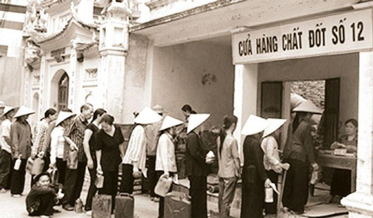

Những khó khăn trước Đổi mới
Việt Nam trước năm 1986 phải đối mặt với nhiều vấn đề nghiêm trọng.

ĐỜI SỐNG XÃ HỘI
Xã hội Việt Nam gần như không giao lưu với phương Tây vì tư tưởng và vấn đề an ninh. Xã hội ít có sự phân hóa giàu nghèo như hiện nay nhưng mức sống của người dân thấp. Tất cả sinh viên ra trường đều được nhà nước phân công công việc nên không lo thất nghiệp nhưng không được tự chọn cơ quan làm việc cho mình. Thi đậu đại học thời đó rất khó, ngoài học lực, tiêu chuẩn cao và xét cả lý lịch. Xã hội có tính cộng đồng cao, sống có người làng nghĩa xóm thân thiết, tối lửa tắt đèn có nhau. Đời sống tinh thần không có nhiều loại hình giải trí, cuộc sống bình an hưng còn nghèo nàn, khó khăn.
.jpg)
GIÁO DỤC
Giáo dục được phổ thông đại trà tới các xã phường với trường cấp 1,2 và mẫu giáo. Công tác bổ túc văn hóa, xóa mù chữ trong độ tuổi đi học cho người dân. Có trường bổ túc văn hóa cho cán bộ cơ sở.Từ năm 1981, học phổ thông gồm 11 năm, trong đó thêm lớp 5, áp dụng cho khu vực miền Bắc. Từ 11 năm sang 12 năm, thêm lớp 9 bắt đầu từ năm 1992– 1993, áp dụng ở miền Bắc.
KINH TẾ
Quan hệ hàng hóa - tiền tệ chỉ là hình thức, quan hệ hiện vật là chủ yếu. Nhà nước quản lý kinh tế thông qua chế độ "cấp phát - giao nộp". Vì vậy, rất nhiều hàng hóa quan trọng như sức lao động, phát minh sáng chế, tư liệu sản xuất quan trọng không được coi là hàng hóa về mặt pháp lý.
Y TẾ
Về mặt y tế, người dân không mất tiền khám chữa bệnh nhưng điều kiện còn nhiều thiếu thốn. Người dân đi khám chữ bệnh, mua thuốc sau đó mang hóa đơn về cơ quan hay bệnh viên thanh toán. Nhà nước viện trợ trang thiết bị ytế, thuốc men.... Bệnh viện cũng được Bộ y tế phân chỉ tiêu để thực hiện. Trước tình hình trì trệ, khủng khoảng của kinh tế và bối cảnh các nước xã hội chủ nghĩa lâm nguy, Việt Nam thực hiện công cuộc đổi mới toàn diện trên phạm vi cả nước, theo hướng kinh tế thị trường có sự định hướng xã hội chủ nghĩa.
.jpg)